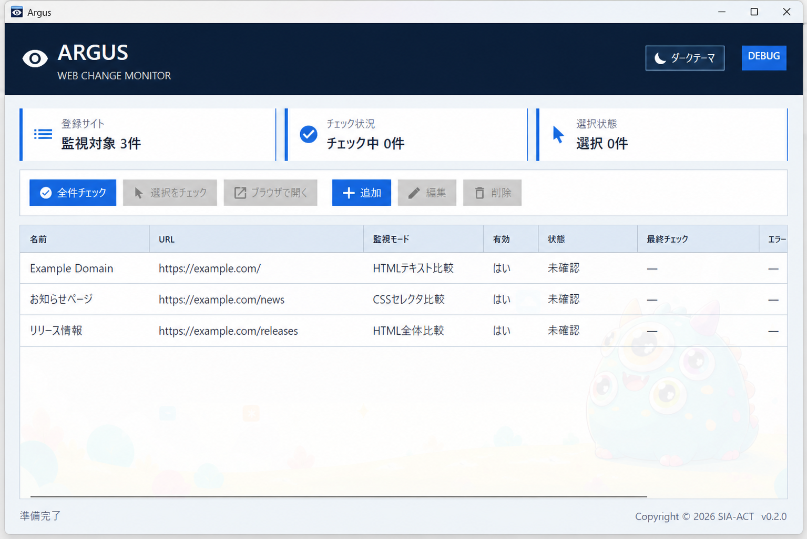
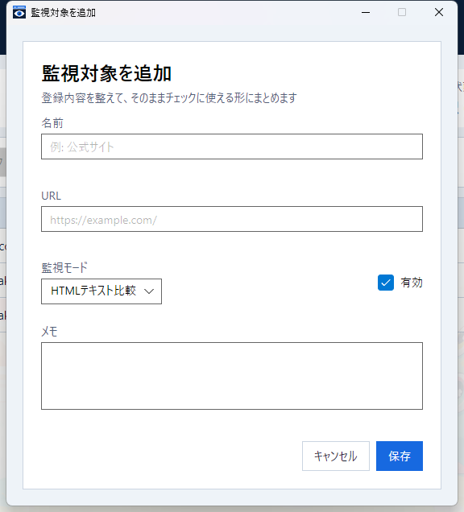

HTMLテキスト比較
画面に現れる文章を中心に比較。タグ、コメント、script、style、空白や改行だけの違いを除外します。
Argus official guide
登録したWebページを、必要なときにまとめて確認。初めて使う方も、判定に迷った方も、このページだけで操作と考え方が分かります。
Argusは、Webページを自動巡回する監視サービスではなく、あなたがボタンを押したときに更新の有無をまとめて調べるAvaloniaデスクトップアプリです。
Argusが向いていること
ブログ、お知らせ、配布ページ、更新履歴など、ログイン不要の公開ページを定期的に確認すること。
http:// または https:// で公開されている確認先ページWindowsではArgus.exe、macOSではArgus.appを開きます。初回起動時は一覧が空なので、まず監視対象を1件登録します。
アプリを起動した後は、メイン画面右上の「マニュアル」ボタンからいつでもこのページを開けます。マニュアル本文と画像はArgusに内蔵されているため、閲覧自体にインターネット接続は必要ありません。
自動ではチェックされません。 更新を確認したいときにArgusを起動し、「全件チェック」または「選択をチェック」を実行してください。
迷ったら、最初は標準の「HTMLテキスト比較」を使います。
「初回取得」は異常ではありません。比較するための基準を初めて保存した、という意味です。次回の正常なチェックから更新の有無を判定します。

| ボタン | できること | 利用できる条件 |
|---|---|---|
| マニュアル | この正式ユーザーマニュアルを既定ブラウザで表示 | 常時利用可能 |
| 全件チェック | 有効な監視対象をすべて確認 | 有効な対象が1件以上ある |
| 選択をチェック | 選択中の有効な対象だけを確認 | 有効な行を選択している |
| ブラウザで開く | 登録URLを既定ブラウザで表示 | 1件だけ選択している |
| 追加 | 新しい監視対象を登録 | 常時利用可能 |
| 編集 | 登録内容を変更 | チェック中でない1件を選択 |
| 削除 | 登録と比較データを削除 | チェック中でない1件を選択 |
| 項目 | 意味 |
|---|---|
| 有効 | 「はい」はチェック対象。「いいえ」は全件・選択チェックの対象外 |
| 名前 | 登録時に付けた識別名 |
| URL | 確認するWebページ |
| 状態 | 現在の起動中に得た最新結果。実行中は「チェック中」も表示 |
| 最終チェック | 最後にチェックが完了した日時。未実行なら「—」 |
| エラー | 失敗理由。エラーがなければ「—」 |
行をクリックすると選択できます。複数選ぶときは Ctrl を押しながらクリックします。選択件数は一覧右上で確認できます。
キーボードでは Tab で「マニュアル」ボタンを含む各操作へ移動し、Enter または Space で実行できます。
画面下部には操作結果、エラーの概要、コピーライト、バージョンが表示されます。開発用のDebugビルドでは DEBUG も表示されます。
「ページの何が変わったら更新とみなすか」を監視モードで決めます。
画面に現れる文章を中心に比較。タグ、コメント、script、style、空白や改行だけの違いを除外します。
指定した見出しや記事一覧など、一致する要素だけを比較。不要な変化を避けたい場合に最適です。
取得したHTMLをそのまま比較。コメント、属性、空白、生成時刻などの微細な変化も検知します。
| 確認したいこと | おすすめ |
|---|---|
| ブログやお知らせの文章が変わったか | HTMLテキスト比較 |
| 記事一覧や特定の見出しだけが変わったか | CSSセレクタ比較 |
| HTMLの属性やコメントを含む変更を漏らしたくない | HTML全体比較 |
| 毎回「更新あり」になってしまう | HTMLテキスト比較、改善しなければCSSセレクタ比較 |
HTML全体比較は最も敏感です。 表示内容が同じでも、アクセスのたびに変わる属性、生成時刻、コメント、空白などを更新として検知することがあります。
http:// または https:// から始まる絶対URLを入力します。| 項目 | 必須 | 説明 |
|---|---|---|
| 名前 | はい | 一覧で見分けやすい名前 |
| URL | はい | http:// または https:// で始まるページURL |
| 監視モード | はい | HTMLテキスト、HTML全体、CSSセレクタから選択 |
| CSSセレクタ | 条件付き | CSSセレクタ比較を選んだ場合のみ必須 |
| この監視対象を有効にする | いいえ | オンならチェック対象。新規登録時はオン |
| メモ | いいえ | 用途や確認ポイントなどの自由記入欄 |
入力に問題がある場合は該当欄にエラーが表示され、保存されません。「キャンセル」をクリックすると、入力内容を保存せずメイン画面へ戻ります。

| 名前 | Example Domain（HTML全体） |
|---|---|
| URL | https://example.com/ |
| 監視モード | HTML全体比較 |
| 有効 | オン |
保存後に選択チェックを実行します。最初は「初回取得」、同じHTMLを再度取得できれば次回は「更新なし」になります。
| 名前 | Example Domain（見出し） |
|---|---|
| URL | https://example.com/ |
| 監視モード | CSSセレクタ比較 |
| CSSセレクタ | h1 |
| 有効 | オン |
| 入力例 | 対象 |
|---|---|
#news | id="news" の要素 |
.news-list | class="news-list" を持つすべての要素 |
main article | main 内のすべての article |
ul.items > li | class="items" の ul 直下にあるすべての li |
一致した要素は、開始タグ、属性、内容、終了タグを含む外側HTMLとして比較されます。複数一致した場合は、ページ内の順番ですべてが対象です。要素の追加・削除・並び替え・属性変更も更新として検知されます。
セレクタの書式が不正、または一致する要素がない場合は「エラー」です。ArgusはJavaScriptを実行しないため、JavaScript実行後にだけ作られる要素は選択できません。
「全件チェック」をクリックすると、「有効」が「はい」の監視対象をすべて確認します。無効な対象は実行されません。
選択した行のうち、有効な監視対象だけが実行されます。
処理中も画面を操作でき、別の監視対象のチェックやブラウザ表示を開始できます。同じ対象を重複してチェックすることも可能です。
状態欄の「チェック中 ×2」は、その対象に2件のチェックが実行中であることを表します。重複時は、最後に完了した結果が一覧に表示されます。
Argusを起動してから、まだチェックしていません。
比較基準がなかったため、今回の内容を基準として保存しました。
今回と前回の正常なチェック内容が同じです。
今回の内容が前回の正常なチェック内容から変わっています。
取得または比較に失敗しました。理由は一覧の「エラー」列に表示されます。
正常に完了した内容は自動保存され、次回の比較に使われます。エラー時は前回の正常な比較データを上書きしません。通信状態、URL、CSSセレクタなどを確認して再実行してください。
差分は比較対象の行単位で表示されます。「変更」では前回と今回の値を並べて確認できます。長い内容は折り返しとスクロールで確認できます。
以前のschema v1 JSONに比較内容が保存されていない場合、そのデータで最初に検出した更新の差分は表示できません。今回の正常チェックで比較内容が保存されるため、次回以降の更新から差分を表示できます。
一覧から1件を選択して「ブラウザで開く」をクリックすると、登録URLがOSの既定ブラウザで開きます。
| 変更内容 | 次回チェック |
|---|---|
| URL、監視モード、CSSセレクタ | 以前の比較データを破棄し、次の正常チェックは「初回取得」 |
| 名前、有効状態、メモのみ | 以前の比較データを引き継ぐ |
一時的に対象から外すだけなら、「この監視対象を有効にする」をオフにして保存します。登録を残したままチェック対象から除外できます。
削除は元に戻せません。 登録内容と、その対象の前回チェックデータが削除されます。
監視対象と前回の正常なチェック結果は、次のJSONファイルに自動保存されます。
Windows: %APPDATA%\Argus\targets.json
macOS: ~/Library/Application Support/Argus/targets.json
追加、編集、削除、正常なチェックの完了時に更新されます。通常、このファイルを手動で編集する必要はありません。
保存ファイルが空、不正、または未対応形式で起動時に読み込めない場合、既存データ保護のため主要な操作は無効になり、ファイルは上書きされません。
1回の取得は30秒でタイムアウトします。多数の対象を実行すると最大4件を同時取得し、残りは順番に処理します。アプリ終了時は実行中・待機中のチェックがキャンセルされます。
「全件チェック」は有効な対象が1件もないと利用できません。「選択をチェック」は有効な行を選択していないと利用できません。登録の有効状態と選択件数を確認してください。
監視対象を1件だけ選択してください。その対象がチェック中なら、すべてのチェックが完了するまで待ってください。
一覧の「エラー」列と画面下部のメッセージを確認します。インターネット接続、URL、ページの公開状態、CSSセレクタを確認して再実行してください。前回の正常な比較データは保持されています。
日付、閲覧数、広告、生成時刻など、アクセスのたびに変わる部分が含まれている可能性があります。HTML全体比較ならHTMLテキスト比較へ変更します。それでも続く場合はCSSセレクタ比較を選び、確認したい要素の id、class、タグ名などを指定してください。
セレクタの書式と、対象ページの取得時点のHTMLに一致する要素があるか確認します。ブラウザ上では見えていても、JavaScriptで後から生成される要素はArgusでは取得できません。
登録URLと、OSの既定ブラウザ設定を確認してください。URLを編集した場合は、次の正常なチェックが「初回取得」になる点にも注意してください。
OSの既定ブラウザ設定と一時フォルダーへの書き込み権限を確認し、Argusを再起動してください。マニュアルはバージョン別の一時フォルダーへ展開されますが、監視対象データや前回の正常な比較結果には影響しません。